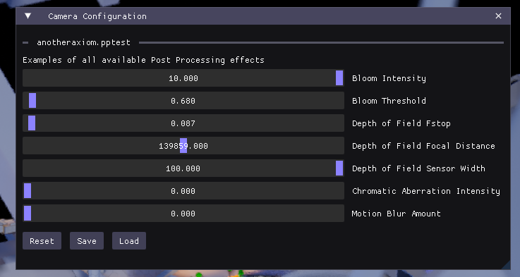

Post Processing
Camera scripts can call functions to apply post-processing effects to the game. The goal of these effects are not to change the way the game world looks, but to change the properties of the camera that are looking at it. Post-processing effects can also be changed via the Spectator->Post Processing window in the game client.
Post-processing effects are applied globally, so an effect applied in one camera script will persist across camera changes until another camera sets a different value.
To disable depth-of-field, set the Focal Distance to 0.
Currently available post-processing effects:

Usage
To change post processing settings, use postProcessSettings to get the current settings. Modifying the properties on this table will change the post processing settings immediately.
postProcessingSettings.bloomIntensity = 1234
postProcessingSettings.bloomThreshold = 1234
postProcessingSettings.depthOfFieldFstop = 1234
postProcessingSettings.depthOfFieldFocalDistance = 1234
postProcessingSettings.depthOfFieldSensorWidth = 1234
postProcessingSettings.chromaticAberrationIntensity = 1234
postProcessingSettings.motionBlurAmount = 1234
To reset the post processing settings to their initial state, use resetPostProcessingSettings().